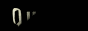

I got this e-mail from Carsten:
Hi Decker,
okay, animated banners for PQ are good, but while you're at it: remember that many people out there who do a free ad for QuArK prefer the good ol' trusty aprox 88x31 buttons. I myself still rely on an ancient blue quarknow.gif which is somewhat too blue for my taste but still the only one I found so far.
So, while the graphx-gurus are all warmed up, ask them for an additional button if you please.
Carsten Witte
The ancient blue quarknow.gif, he's referring to, must be this one.
And frankly, yes it's kinda old.
So if anyone think they can do better, mail your 88x31 ad-button to me.
Some of the ad-banner contributors maybe? The same style would be great, but not necessarily something that have to do with Q3A - just QuArK in general.
Here is what's been send in so far:
Artist: Speul
Filesize: 2833 bytes
64 colors
13 frames

Artist: Bisector
Filesize: 8154 bytes
32 colors
16 frames
Artist: geno
Filesize: 2111 bytes
32 colors
12 frames
Artist: RoosteR Duck
Filesize: 5541 bytes
32 colors
18 frames
Artist: Magnus "Psycho" Jonasson
Filesize: 13333 bytes
Flash animation